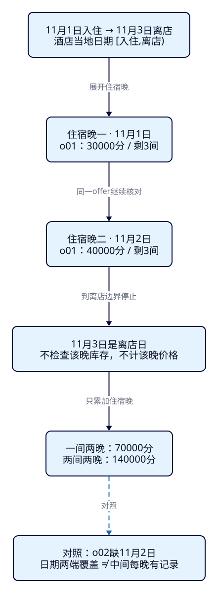
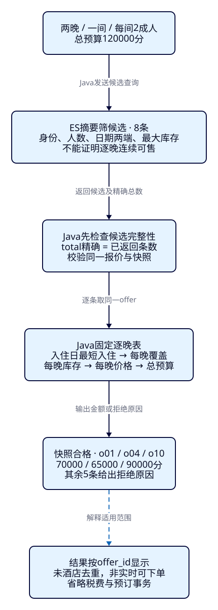

连住两晚，怎样知道
每晚都有房、总价是多少？
F24已经避免把两个房型的条件拼在一起，但一张“含早双床300元起”的卡片仍回答不了两晚能否连住。游客11月1日入住、3日离店，订两间房：第二晚只剩一间，或第二晚涨价，都不能沿用首晚结论。本课让ES先找候选，再由Java用固定逐晚表解释是否合格、哪晚失败与总价。
学完能用输出证明什么
- 展开[入住,离店)的住宿晚，用o01解释离店日为何不检查库存、不计房费。
- 指出日期两端与最大库存摘要漏掉什么，核对o02缺晚、o03售罄、o04房间数不足的实际拒绝原因。
- 以同一offer/计划/币种逐晚计算整段总价，完成REST↔Java核对，解释最短入住、总预算与固定快照的边界。
本课目录
图解跳转：01 · 住宿晚与离店边界 · 02 · 候选与逐晚核对
1. 有一晚便宜、有一天有房，不代表这段入住成立
Elasticsearch负责在索引文档中检索、筛选和排序。本课将一条报价的静态条件与日期、库存摘要放进ES，缩小需要检查的集合；Java服务读取课程提供的逐晚价表，验证整个入住区间。把更多判断移到Java并不会自动带来正确性，关键在于日期集合、报价身份、规则和资料版本是否一致。
o01首晚300元、次晚400元，一间两晚应是700元。o02虽在11月1日和3日都有报价，2日却没有记录；o03两端有库存，中间那晚售罄。如果只看日期范围或“曾经有3间”，三条都会像是可售。摘要丢失了每日细节，查询语法不能替它恢复已经丢掉的信息。
2. 住宿晚是日期集合，不是两个时间戳相减
酒店按当地服务日出售住宿晚。杭州样本使用Asia/Shanghai的日历日期，11月1日入住、3日离店对应集合{11月1日,11月2日}。左闭右开记作[入住,离店)：入住日包含，离店日不包含。Java用LocalDate逐日plusDays(1)，直到日期不再早于离店日；不把毫秒差除以24小时，也不读取机器今天来改变固定实验。

o01在11月3日晚库存为0、价格99900分，仍能通过1日至3日的两晚核对，因为这一天是离店边界。若改为4日离店，它才成为需要核对的第三晚，此时应拒绝。反过来，不能用“离店日不用算”遗漏入住当天。这种边界错误常表现为少算一晚或平白多收一晚。
3. 逐晚判断绑定同一报价，不能每天换一个便宜房
12条虚构报价与固定逐晚表和ES摘要由同一脚本生成，snapshot_id=f25-20261026-v1，时间口径固定在2026-10-26。ES保存独立offer文档，本课按报价核对，不沿用F24酒店内的单晚rooms数组。offer_id绑定酒店、物理房型、bf-flex计划、早餐/退改与币种；一个入住过程不能在不同offer之间拼日期。
除特别标注，均为杭州、酒店open、报价active、双床、含早、flexible、每间最多2成人、CNY。capacity是每间人数上限；adultsPerRoom表示每间安排相同成人数，rooms表示一共订几间。剩余库存是每个住宿晚可供的房间数，须每晚都≥rooms；不是整个区间的房间晚数之和。本课不求解成人在多间房的分配、儿童或加床规则。
下表价格用币种最小单位/每晚/每间，CNY为分、USD为美分。总预算覆盖全部房间与全部住宿晚；不含税费、取消罚金或折扣。缺价不能当免费，缺晚不能从相邻日补齐。min_stay_arrival是这份教学价表明确约定的“该日入住须至少连住几晚”，只读取入住日的值，不能推广为所有供应商的限制模型。
窄屏提示：表格、代码在框内横向滚动；图解可展开。表内每格为“每晚每间价 / 当晚库存”。
| 报价 / 酒店 / 房型 | 11月1日 | 11月2日 | 11月3日 | 特殊条件 |
|---|---|---|---|---|
| o01 / h01 / r01 | 30000 / 3间 | 40000 / 3间 | 99900 / 0间 | 11月2日入住最少5晚；11月1日入住最少1晚 |
| o02 / h02 / r02 | 10000 / 3间 | 缺晚 | 10000 / 3间 | 不借同酒店o11拼11月2日 |
| o03 / h03 / r03 | 20000 / 3间 | 20000 / 0间 | 20000 / 3间 | 默认CNY / 每间容量2 / 入住最少1晚 |
| o04 / h04 / r04 | 25000 / 3间 | 40000 / 1间 | 30000 / 3间 | 默认CNY / 每间容量2 / 入住最少1晚 |
| o05 / h05 / r05 | 20000 / 2间 | 25000 / 2间 | 30000 / 2间 | 11月1日入住最少3晚 |
| o06 / h06 / r06 | 60000 / 3间 | 70000 / 3间 | 10000 / 3间 | 默认CNY / 每间容量2 / 入住最少1晚 |
| o07 / h07 / r07 | 5000 / 3间 | 5000 / 3间 | 5000 / 3间 | USD；候选排除 |
| o08 / h08 / r08 | 10000 / 3间 | 10000 / 3间 | 10000 / 3间 | 每间容量1；候选排除 |
| o09 / h09 / r09 | 10000 / 3间 | 10000 / 3间 | 10000 / 3间 | 酒店paused；候选排除 |
| o10 / h10 / r10 | 45000 / 2间 | 45000 / 2间 | 45000 / 2间 | 默认CNY / 每间容量2 / 入住最少1晚 |
| o11 / h02 / r02b | 缺晚 | 10000 / 3间 | 10000 / 3间 | 同h02另房型r02b；缺入住晚；候选排除 |
| o12 / h12 / r12 | 30000 / 3间 | 缺价 / 3间 | 30000 / 3间 | 默认CNY / 每间容量2 / 入住最少1晚 |
h02的o11在11月2日有另一房型r02b，不会修补o02/r02的缺晚。若游客允许换房，那是新的搜索契约；当前请求明确要求同一房型与计划连续入住。数据中的缺晚是合法的业务缺口，重复offer或同offer同日重复记录则是资料完整性错误，加载器拒绝，不能任意挑一条相加。
4. 日期两端覆盖，是必要条件，仍不是连续覆盖
window_start取表内最早日期，window_end_exclusive取最晚日期加一天；它们记录的是资料的两端，包括零库存或缺价日，不表示中间无缺口。max_available_rooms取整个表的最大库存，也不保证本次每晚足够。只要逐晚表完整且和摘要同版本，真正合格的报价一定能通过这些必要条件；反向推理不成立。资料滞后时连“不漏掉合格报价”的前提也不再可靠。
下面完整请求先限定身份政策、币种与每间容量，再要求摘要起点≤入住、终点≥离店、最大库存≥房间数。gte/lte只比较这些标量字段，不会隐式逐日展开。本课没有把逐晚记录索引进去，也没有用nested或range查询替代逐晚表。min_price_minor只是单晚最低价元数据，不能拿它乘晚数冒充实际总价，因此未用于此查询的预算过滤。
{
"size": 100,
"track_total_hits": true,
"query": {
"bool": {
"filter": [
{
"term": {
"city_code": {
"value": "HZ"
}
}
},
{
"term": {
"hotel_status": {
"value": "open"
}
}
},
{
"term": {
"offer_status": {
"value": "active"
}
}
},
{
"term": {
"bed_type": {
"value": "twin"
}
}
},
{
"term": {
"meal": {
"value": "breakfast"
}
}
},
{
"term": {
"cancellation": {
"value": "flexible"
}
}
},
{
"term": {
"rate_plan_id": {
"value": "bf-flex"
}
}
},
{
"term": {
"currency": {
"value": "CNY"
}
}
},
{
"range": {
"capacity": {
"gte": 2.0
}
}
},
{
"range": {
"window_start": {
"lte": "2026-11-01"
}
}
},
{
"range": {
"window_end_exclusive": {
"gte": "2026-11-03"
}
}
},
{
"range": {
"max_available_rooms": {
"gte": 1.0
}
}
}
]
}
},
"sort": [
{
"offer_id": {
"order": "asc"
}
}
]
}默认实际候选按offer_id为[o01,o02,o03,o04,o05,o06,o10,o12]，共8条。o07币种、o08每间容量、o09酒店状态、o11缺入住日的两端范围在候选层被排除。total是候选offer数，不能叫合格酒店数。size=100用于这份小实验，track_total_hits=true用于核对是否取全；Java还要求返回条数等于精确total，超出上限明确失败。
5. f25-c01：固定环境，再亲眼看摘要漏掉什么
使用独立ES9.4.0/Lucene10.4.0、127.0.0.1:19225、tut-f25-offers，无插件。一主零副本、dynamic=strict、refresh_interval=-1；整数禁coerce，日期为strict_date。名称只存取，不做文本相关性。依赖Docker/Compose、Bash、curl、Python3；完整步骤在本机入口。
cd projects/travel-search
export ES_URL=http://127.0.0.1:19225
export APP_URL=http://127.0.0.1:18081
export F25_OUT=/tmp/f25-reader-first
docker compose -f infra/f25/compose.yaml up -d es
bash infra/f25/wait.sh
# 已有本课索引先用cleanup，不删其他课
bash labs/f25/01-prepare.sh
bash labs/f25/02-candidates.sh完整settings/mapping · PUT /tut-f25-offers
{
"settings": {
"number_of_shards": 1,
"number_of_replicas": 0,
"refresh_interval": "-1"
},
"mappings": {
"dynamic": "strict",
"properties": {
"offer_id": {
"type": "keyword"
},
"hotel_id": {
"type": "keyword"
},
"hotel_name": {
"type": "keyword"
},
"room_id": {
"type": "keyword"
},
"city_code": {
"type": "keyword"
},
"hotel_status": {
"type": "keyword"
},
"offer_status": {
"type": "keyword"
},
"bed_type": {
"type": "keyword"
},
"meal": {
"type": "keyword"
},
"cancellation": {
"type": "keyword"
},
"rate_plan_id": {
"type": "keyword"
},
"currency": {
"type": "keyword"
},
"snapshot_id": {
"type": "keyword"
},
"capacity": {
"type": "integer",
"coerce": false
},
"max_available_rooms": {
"type": "integer",
"coerce": false
},
"min_price_minor": {
"type": "long",
"coerce": false
},
"window_start": {
"type": "date",
"format": "strict_date"
},
"window_end_exclusive": {
"type": "date",
"format": "strict_date"
}
}
}
}01有10次HTTP：GET /核对版本、GET /_nodes/plugins、PUT索引、限定索引GET健康、POST索引_bulk、POST索引_refresh、GET索引_count、GET索引_mapping、GET索引_settings、POST索引_mget。Bulk使用完整NDJSON，每项create，第一次12项created；读取全部12份_source与固定文件精确比较。HTTP200不能代替Bulk的errors与条级状态。
02再做3次：上面的POST /tut-f25-offers/_search，然后GET /tut-f25-offers/_doc/o02与GET /tut-f25-offers/_doc/o03。两者摘要都是11月1日至4日、最大库存3；打开逐晚表却分别看到11月2日缺失与库存0。这里完成的是“找出摘要反例”，还没有证明任何一条连住合格。
6. f25-c02：逐晚表给出金额，也给出拒绝证据
准备完成后，启动已有Boot4/JDK25应用。继续锁定Boot4.0.8、官方Java与Rest5 Client9.4.8、Wrapper3.3.4/Maven3.9.11。应用用Temurin25.0.4.1+1实测；ES的bundled JVM26.0.1+8另列，不用ES进程的Java版本证明应用基线。
# 新终端，从仓库根目录；先将JAVA_HOME/PATH配置为JDK25
cd projects/travel-search/backend
./mvnw -B -ntp clean package
ES_URL=http://127.0.0.1:19225 APP_PORT=18081 java -jar target/travel-search-0.7.0.jar另一个终端仍在projects/travel-search：
bash labs/f25/03-stays.sh
# 可选手工观察，不计教学21次
curl --fail-with-body -sS -X POST "$APP_URL/api/stay/inspect" \
-H 'Content-Type: application/json' --data-binary @search/f25/two-nights-input.jsonJava输入是完整搜索契约，不接受任意索引名或任意DSL：
{
"checkIn": "2026-11-01",
"checkOut": "2026-11-03",
"rooms": 1,
"adultsPerRoom": 2,
"budgetMinor": 120000
}| 报价 | 两晚一间实测 | 为什么 |
|---|---|---|
| o01 | ACCEPTED · 70000分 | 30000+40000；离店日不读；只用11月1日最短入住1晚 |
| o02 | MISSING_NIGHT · 11月2日 | 同offer没有该晚，不能借o11 |
| o03 | SOLD_OUT · 11月2日 | 有记录但库存0 |
| o04 | ACCEPTED · 65000分 | 25000+40000；每晚至少1间 |
| o05 | MIN_STAY · 11月1日 | 此次住2晚，小于入住日要求3晚 |
| o06 | BUDGET_EXCEEDED · 130000分 | 60000+70000超过全部总预算120000 |
| o10 | ACCEPTED · 90000分 | 45000+45000 |
| o12 | MISSING_PRICE · 11月2日 | 库存有记录，金额缺失，不能补0 |
03调用一次POST /api/stay/inspect，再将返回的完整esRequest重放到POST /tut-f25-offers/_search，合计2次教学HTTP；Java内部另有一次ES搜索。逐条核对ID、完整_source、sort、total、Java每晚字段和人工算价。ES typed响应省略null评分字段时仅归一化_score/max_score的null省略；不忽略价格、库存或条件差异。
7. 让关键规则直接出现在Java实现中

官方客户端的候选查询与上面的REST整份JSON相等，数值gte与日期gte各用相应builder。固定政策不能被浏览器任意覆盖：
public SearchRequest request(StayInput input) {
var b = new BoolQuery.Builder();
for (String[] pair : new String[][]{{"city_code","HZ"},{"hotel_status","open"},{"offer_status","active"},
{"bed_type","twin"},{"meal","breakfast"},{"cancellation","flexible"},{"rate_plan_id","bf-flex"},{"currency","CNY"}})
b.filter(q -> q.term(t -> t.field(pair[0]).value(pair[1])));
b.filter(q -> q.range(r -> r.number(n -> n.field("capacity").gte(input.adultsPerRoom().doubleValue()))));
b.filter(q -> q.range(r -> r.date(d -> d.field("window_start").lte(input.checkIn().toString()))));
b.filter(q -> q.range(r -> r.date(d -> d.field("window_end_exclusive").gte(input.checkOut().toString()))));
b.filter(q -> q.range(r -> r.number(n -> n.field("max_available_rooms").gte(input.rooms().doubleValue()))));
return new SearchRequest.Builder().index("tut-f25-offers").size(100).trackTotalHits(t -> t.enabled(true))
.query(q -> q.bool(b.build())).sort(s -> s.field(f -> f.field("offer_id").order(SortOrder.Asc))).build();
}以下是完整逐晚核对方法。先按同一offer取表、检查完整摘要相等，再生成请求内的每一晚。先看入住日最短晚数，其后按日期先后检查缺晚、售罄、数量不足、缺价，返回首个拒绝原因；同时保留所有请求晚的明细，便于观察。只有这些条件都成立才形成总价，最后比较总预算。预算拒绝仍显示已算出的完整金额，其余失败不展示部分晚合计。
private Decision decision(JsonNode s, StayInput input) {
JsonNode offer = table.get(s.get("offer_id").asString());
require(offer != null && offer.get("summary").equals(s)); // stale or altered ES source is an integrity failure
Map<String, JsonNode> byDate = new HashMap<>();
for (JsonNode row : offer.get("nights")) byDate.put(row.get("date").asString(), row);
List<Night> nights = new ArrayList<>();
for (LocalDate d = input.checkIn(); d.isBefore(input.checkOut()); d = d.plusDays(1)) {
JsonNode row = byDate.get(d.toString());
nights.add(row == null ? new Night(d.toString(), null, null, null) :
new Night(d.toString(), row.get("available_rooms").asInt(),
row.hasNonNull("price_minor") ? row.get("price_minor").asLong() : null,
row.get("min_stay_arrival").asInt()));
}
String reason = "ACCEPTED", failed = null; Long total = null;
long length = ChronoUnit.DAYS.between(input.checkIn(), input.checkOut()), sum = 0;
Night arrival = nights.getFirst();
if (arrival.minStayArrival() != null && length < arrival.minStayArrival()) {
reason = "MIN_STAY"; failed = arrival.date();
} else for (Night n : nights) {
if (n.availableRooms() == null) reason = "MISSING_NIGHT";
else if (n.availableRooms() == 0) reason = "SOLD_OUT";
else if (n.availableRooms() < input.rooms()) reason = "STOCK_SHORTAGE";
else if (n.priceMinor() == null) reason = "MISSING_PRICE";
if (!reason.equals("ACCEPTED")) { failed = n.date(); break; }
sum = Math.addExact(sum, Math.multiplyExact(n.priceMinor(), input.rooms().longValue()));
}
if (reason.equals("ACCEPTED")) {
total = sum;
if (sum > input.budgetMinor()) reason = "BUDGET_EXCEEDED";
}
return new Decision(s.get("offer_id").asString(), s.get("hotel_id").asString(), s.get("hotel_name").asString(),
s.get("room_id").asString(), s.get("rate_plan_id").asString(), s.get("currency").asString(),
reason, failed, total, List.copyOf(nights));
}金额用long整数分，通过addExact/multiplyExact累加与乘房间数，不用浮点元相加。o01的11月2日最短入住值为5，但本次是11月1日入住，所以两晚仍合格；对每个途经住宿晚取最大最短值，会错误拒绝它。本课没有CTA/CTD、连住折扣或每间不同计价等更复杂条款。
ES出错、部分分片失败、超时、候选截断、资料错配都不能包装成“0条合格”。完整性检查与输出投影如下；实际逐条输出保留酒店/房型/计划/币种/快照身份：
public Result inspect(StayInput input) throws IOException {
var request = request(input); var response = client.search(request, JsonData.class);
require(!response.timedOut() && response.shards().failed().longValue() == 0 && response.hits().total() != null
&& response.hits().total().relation().jsonValue().equals("eq")
&& response.hits().total().value() == response.hits().hits().size()); // never silently accept a truncated candidate set
List<Decision> decisions = new ArrayList<>(); Set<String> seen = new HashSet<>();
for (var hit : response.hits().hits()) {
require(hit.source() != null); JsonNode source = json.readTree(hit.source().toJson().toString());
require(source.hasNonNull("offer_id") && hit.id().equals(source.get("offer_id").asString()) && seen.add(hit.id()));
decisions.add(decision(source, input));
}
return new Result(input, SNAPSHOT,
"只核对固定快照的全部ES候选；按offer_id显示，未酒店去重或按总价排序；不含税费，不锁库存，不证明实时可下单。",
response.hits().total().value(), decisions.stream().filter(d -> d.reason().equals("ACCEPTED")).count(),
List.copyOf(decisions), tree(request), tree(response));
}固定表加载、类型与输入校验完整文件
表随jar打包；修改表后重新构建并重启。加载时拒绝重复offer/日期、负库存和负金额。日期/数量/预算验证失败返回400；后端拒绝或结果契约不符返回502；连接失败返回503，均由既有ApiErrors处理。
@Service
public class StaySearchService {
private final ElasticsearchClient client;
private final JsonMapper json;
private final Map<String, JsonNode> table = new LinkedHashMap<>();
private static final String SNAPSHOT = "f25-20261026-v1";
public StaySearchService(ElasticsearchClient client, JsonMapper json) throws IOException {
this.client = client; this.json = json;
try (var stream = new ClassPathResource("f25/stay-table.json").getInputStream()) {
JsonNode root = json.readTree(stream);
require(root.get("snapshot_id").asString().equals(SNAPSHOT));
for (JsonNode offer : root.get("offers")) {
JsonNode summary = offer.get("summary"); String id = summary.get("offer_id").asString();
require(summary.get("snapshot_id").asString().equals(SNAPSHOT) && table.putIfAbsent(id, offer) == null);
Set<String> dates = new HashSet<>();
for (JsonNode row : offer.get("nights")) {
require(dates.add(LocalDate.parse(row.get("date").asString()).toString()));
require(row.get("available_rooms").isIntegralNumber() && row.get("available_rooms").asInt() >= 0);
require(row.get("min_stay_arrival").isIntegralNumber() && row.get("min_stay_arrival").asInt() >= 1);
require(!row.hasNonNull("price_minor") || (row.get("price_minor").isIntegralNumber() && row.get("price_minor").asLong() >= 0));
}
}
}
}
public record Night(String date, Integer availableRooms, Long priceMinor, Integer minStayArrival) {}
public record Decision(String offerId, String hotelId, String hotelName, String roomId, String planId,
String currency, String reason, String failedDate, Long totalMinor, List<Night> nights) {}
public record Result(StayInput conditions, String snapshotId, String boundary, long candidateTotal,
long acceptedTotal, List<Decision> decisions, JsonNode esRequest, JsonNode esResponse) {}
private static void require(boolean ok) { if (!ok) throw new AttractionSearchService.IncompleteSearchException(); }
private JsonNode tree(JsonpSerializable value) { return json.readTree(JsonpUtils.toJsonString(value, client._jsonpMapper())); }package dev.esweb.travel;
import jakarta.validation.constraints.Max;
import jakarta.validation.constraints.Min;
import jakarta.validation.constraints.NotNull;
import java.time.LocalDate;
public record StayInput(@NotNull LocalDate checkIn, @NotNull LocalDate checkOut,
@NotNull @Min(1) @Max(3) Integer rooms,
@NotNull @Min(1) @Max(4) Integer adultsPerRoom,
@NotNull @Min(1) @Max(2000000) Long budgetMinor) {
public void validateDates() {
if (checkIn.isBefore(LocalDate.of(2026,11,1)) || checkOut.isAfter(LocalDate.of(2026,11,4))
|| !checkIn.isBefore(checkOut)) throw new IllegalArgumentException("Unsupported stay interval");
}
}package dev.esweb.travel;
import jakarta.validation.Valid;
import java.io.IOException;
import org.springframework.http.ResponseEntity;
import org.springframework.http.converter.HttpMessageNotReadableException;
import org.springframework.web.bind.MethodArgumentNotValidException;
import org.springframework.web.bind.annotation.*;
@RestController
public class StayController {
private final StaySearchService service;
public StayController(StaySearchService service) { this.service = service; }
@ExceptionHandler({MethodArgumentNotValidException.class, HttpMessageNotReadableException.class, IllegalArgumentException.class})
public ResponseEntity<ApiErrors.ErrorBody> invalid(Exception error) {
return ResponseEntity.badRequest().body(new ApiErrors.ErrorBody("INVALID_STAY_INPUT",
"日期须在2026-11-01至04内且入住早于离店；房间1–3，每间成人1–4，总预算为1–2000000整数分。"));
}
@PostMapping("/api/stay/inspect")
public StaySearchService.Result inspect(@Valid @RequestBody StayInput input) throws IOException {
input.validateDates(); return service.inspect(input);
}
}8. f25-c03：改变一项需求，看拒绝原因怎样变化
运行04-variations。两间两晚的预算设为240000分，与一间情境保持同等每间预算：o01=140000、o10=180000分合格；o04第二晚只有1间，变为STOCK_SHORTAGE，不能把第一晚的3间“挪”过来。o06两间需260000分，仍超预算。候选仍是8条，因为它们的最大库存都足够，实际合格降为2条。
独立变化一是11月1日至4日、一间、预算200000分：o01的第三晚库存0，原先合格现在SOLD_OUT；o05终于满足入住最少3晚。合格为o04=95000、o05=75000、o06=140000、o10=135000分，共4条。独立变化二是1日至2日一晚、一间、预算120000分：o02/o03/o12不再需要出问题的11月2日晚，合格变为o01/o02/o03/o04/o06/o10/o12，共7条。o05仍因最短入住拒绝。
这三组各执行一次Java和一次真实DSL的REST重放，6次教学HTTP，Java内部3次ES搜索另计。完整输入与DSL分别保存为两间、三晚、一晚及对应候选DSL。先手算再运行；脚本断言是配套证据，不要求读者掌握测试工具。
9. 用已有观察窗看同一个契约
打开http://127.0.0.1:18081/f25.html，选“一间两晚”，提交后检查8条候选/3条快照合格报价、o01的700元、o02/o03失败晚。切“两间”再提交，看到o04拒绝；切“三晚”看到o01拒绝、o05通过。可手改日期、每间成人、房间数与总预算；字段受固定日期窗限制，4成人每间会得到0候选，而不是分配两间各2人。
本机页面只是课程提供的观察工具，不需要开发前端。实际路径是浏览器→本机Java→ES，Java再读打包价表；浏览器只调同源/api/stay/inspect，不直连ES、不持有ES凭据。卡片逐晚展示，原文区保留输入、完整候选DSL、实际ES响应及Java核对结果。修改条件或请求失败立即清空旧卡片，避免把上次的合格报价当成新结果。Pages只提供教程与图，不连接读者的本机环境。
10. 重复、错误与重做必须有确定结果
主流程21教学HTTP=案例一13＋案例二2＋案例三6，Java内部4次ES搜索另计。重复PUT索引应400；重复Bulk的12项create应409，不会覆盖原数据。可选errors探针另29HTTP，验证10种非法输入400、strict写入400、快照错配502与恢复；再注入101条点名测试报价，观察候选total109但size仅100时Java502，删除这101条并恢复原12条。
参数错误、缺索引502、真实停机503和恢复的观察窗验收与教程HTTP阅读分别记录；超时/部分分片失败虽有代码防护，本轮没有注入，不称实测。没有将小样本耗时当性能数据，也没有验证生产多节点、安全、实时供价或库存事务。
python3 labs/f25/lab.py errors --out /tmp/f25-reader-errors
bash labs/f25/cleanup.sh --out /tmp/f25-reader-between
export F25_OUT=/tmp/f25-reader-repeat
bash labs/f25/01-prepare.sh
bash labs/f25/02-candidates.sh
bash labs/f25/03-stays.sh
bash labs/f25/04-variations.sh
# 关闭自己启动的Java后清理本课
bash labs/f25/cleanup.sh --out /tmp/f25-reader-final
docker compose -f infra/f25/compose.yaml stop escleanup只DELETE tut-f25-offers并GET404，不删其他课、卷或镜像。每轮换F25_OUT，保留既有收据。Compose仅绑定回环、关闭安全，用于本机独立教学。本课两轮、错误恢复、图源生成、HTTP阅读和实际视觉分列在执行记录与阅读验收。
11. 合格报价还不是酒店列表最低价
本课能证明：对这份固定、完整候选集合，某个offer在每个住宿晚都符合规则，金额如何得到，失败发生在哪一天。已通过报价仍可能在下一次供价更新后失效；同版本校验不能提供下单时的库存锁或跨系统事务。下单前仍需要权威业务系统核价和确认库存，本课不实现预订。
现在结果按offer_id显示，同酒店可能出现多条报价。下一课F26才处理collapse、酒店去重、匹配最低价和计数范围；本课不把合格offer数改叫酒店数，也不把前一页候选核对结果称为全局最低总价。
官方依据与版本锚点
官方range参数解释gte/lte比较；官方分页说明解释size限制返回条数。固定v9.4.0核对RangeQueryBuilder → gte/lte/doToQuery与SearchSourceBuilder → size/trackTotalHits；两文件官方字节与本地源码哈希。住宿规则来自明确的教学数据契约，不能归因于ES内置业务能力。
实验与能力检查
1. 11月1日至3日为什么只核对两条日期？
[入住,离店)包含1日与2日晚。3日是离店，不收费也不需要该晚库存；改4日离店才增加3日晚。
2. o02摘要覆盖1日至4日，为什么仍拒绝？
摘要只记录最早、最晚日期两端。2日晚缺记录；同酒店o11属于另一个房型，不能拼进来。
3. o04最大库存3，为什么订两间失败？
2日仅1间，必须每晚库存≥2。最大值只证明有某一天足够。
4. o01最低单晚30000分，为什么两间两晚不是120000分？
逐晚是30000和40000，各乘2间，总计140000分。最低价乘晚数漏掉第二晚涨价。
5. o01第二晚min_stay_arrival为5，为什么两晚仍通过？
该限制针对“在第二晚当天入住”。本请求1日入住，只读1日的最短值1；不能取途经所有晚的最大值。
6. 独立预测一晚与三晚结果，再运行04核对
一晚合格o01/o02/o03/o04/o06/o10/o12，共7条；三晚合格o04/o05/o06/o10，共4条，金额95000/75000/140000/135000分。用离店边界、第三晚库存和入住最少3晚解释变化。
7. total109，只取100条，或快照已变旧，能说全部报价已核验吗？
不能。当前实现对截断返回502；同源不符也502。候选取全且快照相同只证明这份快照内的规则，不证明此刻仍可下单或库存已锁定。
实际陷阱
用区间两端、库存最大值代替每晚。o02缺晚、o03售罄、o04两间不足都能穿过摘要层；必须展开每个住宿晚检查同一offer。
缺晚补0，或把单晚起价乘晚数。缺记录/缺价拒绝，金额按每晚每间整数分累加后乘房间数；离店日晚不参与。不能把USD数值按CNY显示。
把快照合格当实时可订，把截断候选当全集。本课只证明固定快照的完整候选；未扣库存、未做事务、未酒店去重或全局价格排名。
速记
| 问题 | 本课证据 |
|---|---|
| 日期集合 | 1日入住/3日离店：只检查1日、2日晚 |
| 候选不是合格 | 8条ES候选→o01/o04/o10三条快照合格 |
| 一间两晚 | 70000 / 65000 / 90000分，未按总价排序 |
| 两间两晚 | o01=140000、o10=180000；o04第二晚不足 |
| 规则与身份 | 同offer/计划/币种；每间容量、每晚库存；只用入住日最短晚数 |
| 证明范围 | 12固定摘要、全部8候选；非实时供价/预订/酒店最低价 |
把每个住宿晚与同一条报价对齐，再让总价来自这些已核对的晚。